Caminos de Prado del Rey

Catálogo de caminos públicos
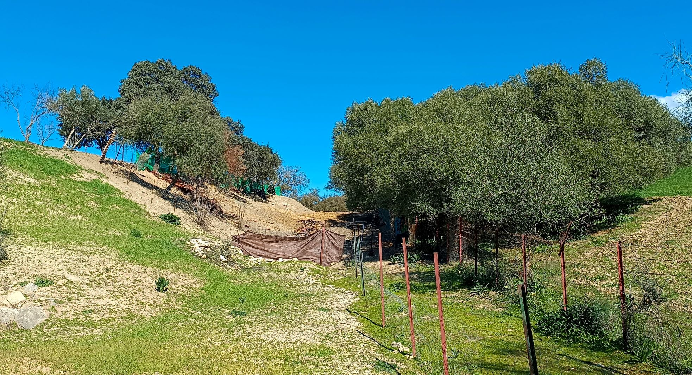
Camino a la Salina
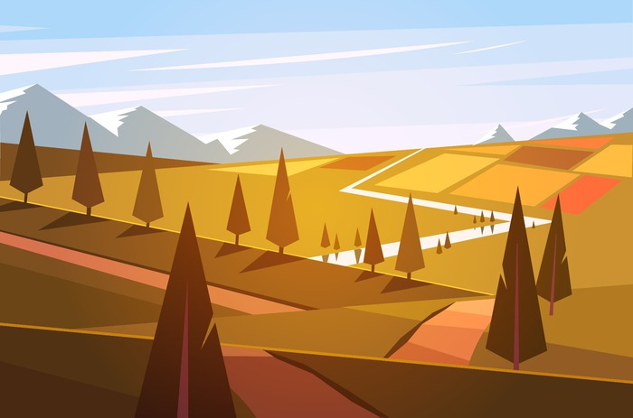
Camino a Villamartín y Montellano
Camino de Arcos por la Granja a Prado del Rey
Camino de la Boca del Madroñal
Camino de la Loma de las Encinas
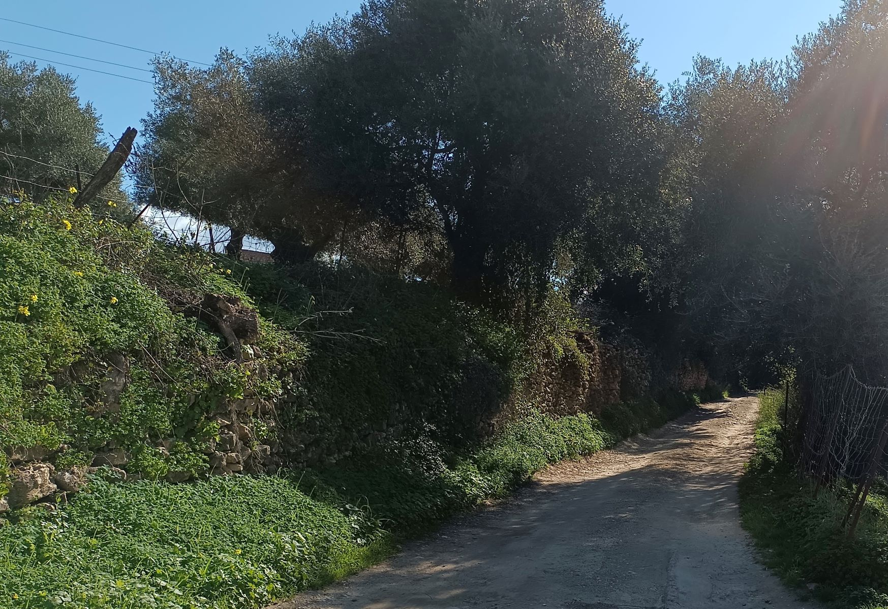
Camino de las Lomas
Camino de las Palomas
Camino de las Pilas
Camino de las Vegas
Camino de los Granujales
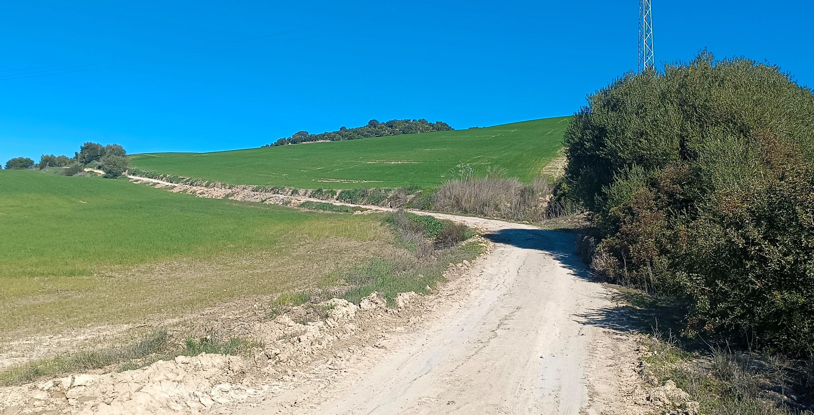
Camino de Servidumbre
Camino de Taramilla
Camino de Villamartín a Grazalema
Camino de Villamartín a Grazalema y El Bosque
Camino de Villamartín a Prado del Rey
Camino del Callejón
Camino del Canuto
Camino del Caracol
Camino del Cerro
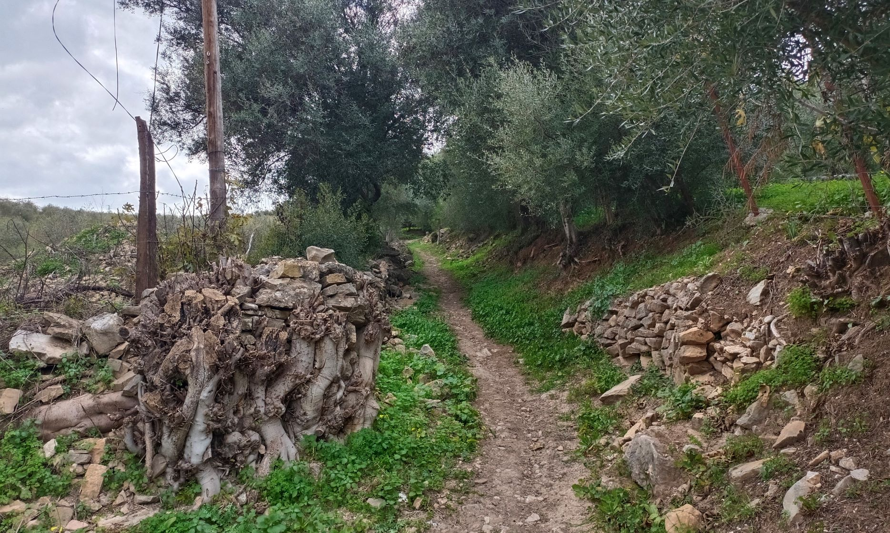
Camino del Pilar
Camino del Pozo Anca
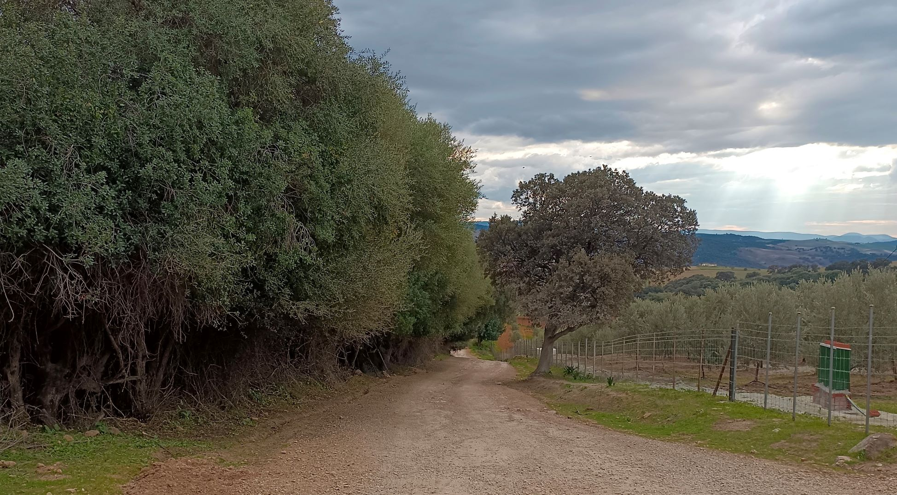
Camino Fundacional I

Camino Fundacional II
Camino Fundacional III o de Prado del Rey a Arcos
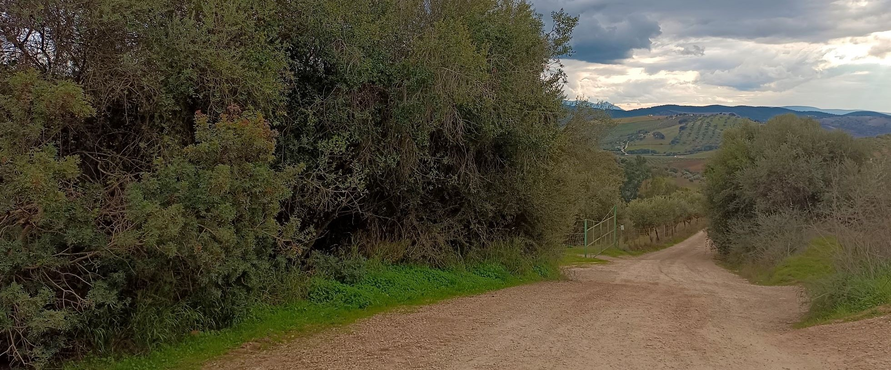
Camino Fundacional III o de Prado del Rey a Arcos
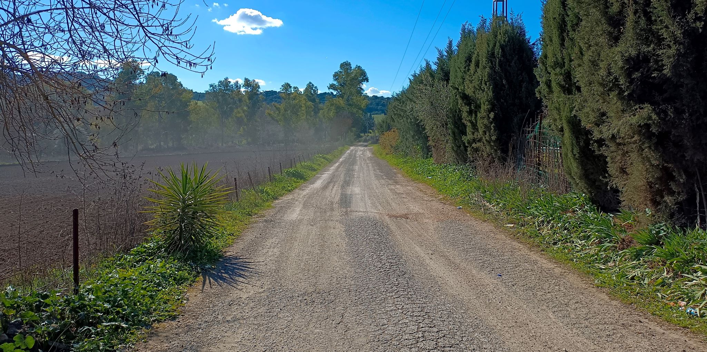
Camino Fundacional IV o de Servidumbre
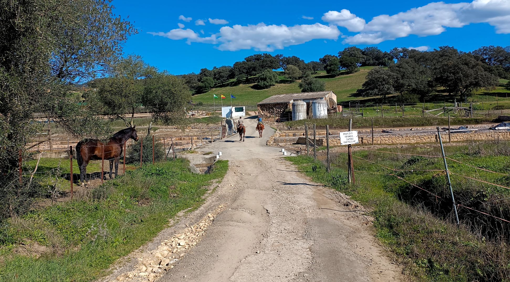
Camino Fundacional V o a la Salina
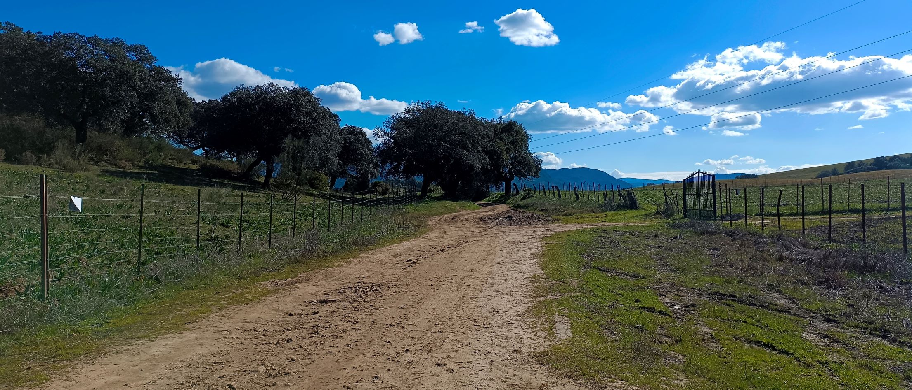
Cañada Real de Sevilla a Ubrique
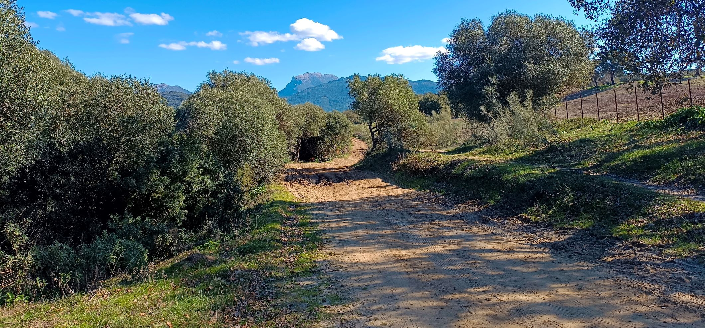
Colada de Arcos a Ubrique
Colada del Camino Alto de El Bosque
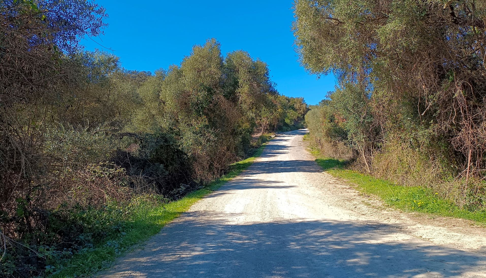
Colada del Camino Bajo de El Bosque
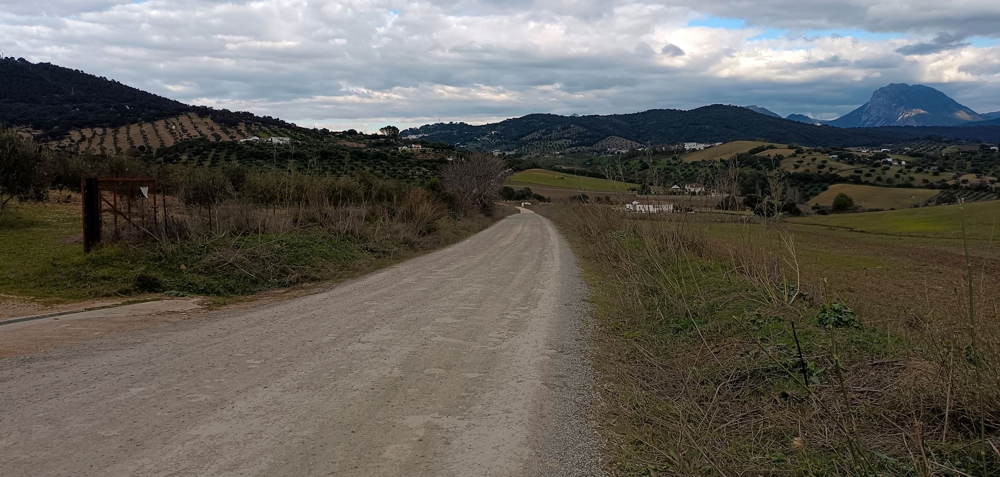
Colada de Prado del Rey a Bornos
Colada de Villamartín a Grazalema
Trocha de la Cuesta
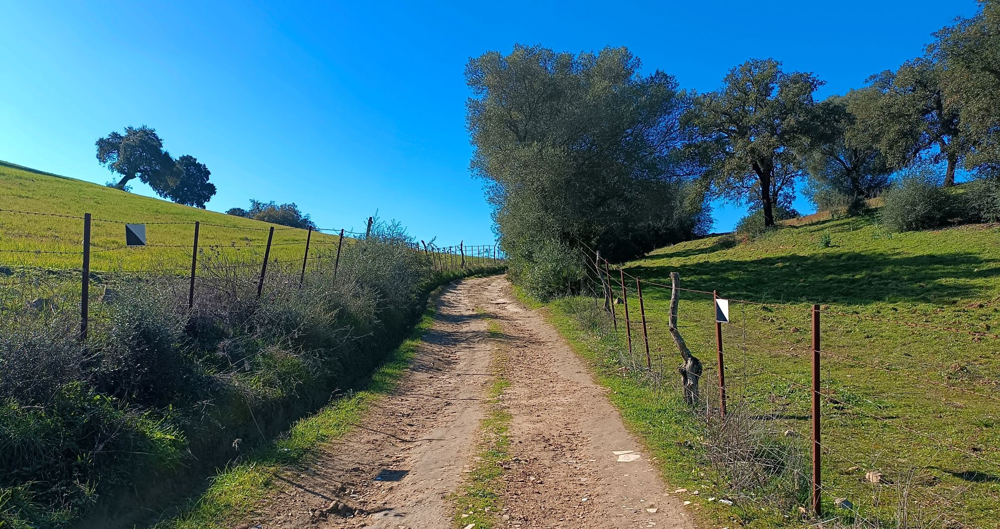